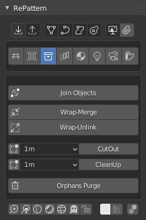

Wrap Up
Tools
Join Object -> join new objects into middle instance field
Wrap-Merge -> merge all instances to one geometry
Wrap-Unlink -> make a single objects of each instance
CutOut -> cut and delete geometry around the middle instance field
CleanUp -> remove loose geometries outside of the instance center
Purge -> purge orphaned data-blocks without any user from the file